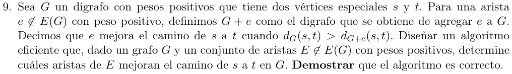

Algoritmo(G,E):
ds <- Dijkstra(G,s) //O(E(G)+V log V)
G' <- G con las aristas invertidas
dt <- Dijkstra(G',t) //O(E(G)+V log V)
res <- conjunto vacio
Para cada (v->w) en E: //O(E)
Si ds[v]+costo(v->w)+dt[w] < ds[t]:
res <- res union v->w
return res
Complejidad final: O(E + E(G) + V log V)
Defino \(P = \left\{ s\ldots t \right\}\), el camino de s hasta t en \(G\)
ds y dt por Dijkstra sabemos que son
correctos y devuelven los caminos mínimos de s a todo
v en \(V(G)\), y de t
a todo nodo v en un camino \(v
\rightarrow \ldots \rightarrow t\) respectivamente.
Vemos para cada arista \(v \rightarrow w \in E \notin E(G)\)
Invariante de ciclo: \(d(s,v) + c(v \rightarrow w) + d(w,t) < d(s,t)\underset{L}{\Longrightarrow}\text{ res } = \text{ res } \cup v \rightarrow w\)
En palabras, si existe arista \(v
\rightarrow w\) que mejora el camino mínimo de s a
t entonces la arista existe en el output res
(además será st-eficiente).
Inducción en la cantidad de iteraciones \(k\)
Caso base \(k = 0\):
res = \(\varnothing\),
todavía no encontramos ninguna arista que mejore el camino \(s \rightarrow \ldots \rightarrow t\) por lo
que se preserva el invariante.
Paso inductivo\(k \Rightarrow k + 1\):
En la k-ésima iteración, res representa el conjunto de
todas las aristas de \(E\) que mejoran
\(P\).
Queremos ver en la iteración k+1, la arista \(v \rightarrow w \in E\).
Si \(d(s,v) + c(v \rightarrow w) + d(w,t)
< d(s,t)\) entonces \(v \rightarrow
w\) mejora \(P\), por lo que
agregamos \(v \rightarrow w\) a
res. Caso contrario, no agregamos nada a res.
Vale el invariante.
Esto vale porque por propiedad de camino más corto, \(d(s,v) + d(v,w) + d(w,t) = d(s,t)\) en \(G\), y si mejora el camino entonces en particular \({c(v \rightarrow w)}_{G + e} < {d(v,w)}_{G}\)